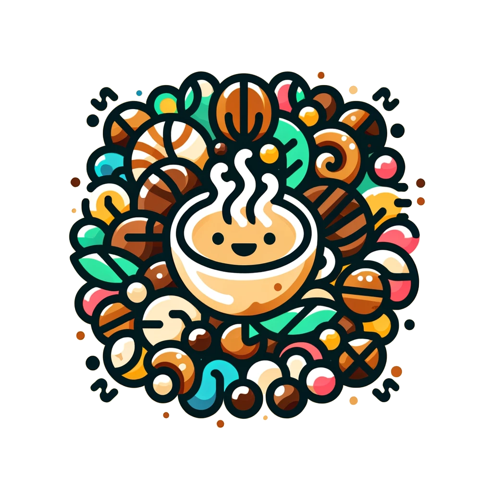

首爾5天遊 - 綜合美食、購物與旅行指南
 榛果繽紛樂
目錄
第1天
第2天
第3天
第4天
特色主題推薦
購物小提醒
飲食小提醒
交通小提醒
文化禮儀小提醒
第1天
松月洞童話村附近
美食：
仁川炸醬麵：當地特色美食，濃郁醬料配上勁道麵條
月尾島章魚：新鮮章魚料理，可以選擇生吃或烤製
松月洞燉雞：以人參和各種藥材燉煮，滋補養生
仁川蛤蜊麵：使用當地新鮮蛤蜊，湯頭鮮美
購物：
月尾島特產店：可以購買海苔、海鮮乾貨等當地特產
松月洞藝術街：有許多手工藝品和畫廊，可以購買獨特的紀念品
仁川開港街附近
美食：
新浦國際市場：
辣炒年糕：道地街邊小吃
血腸湯：營養豐富，冬天必吃
海鮮煎餅：外酥內軟，配啤酒最佳
清日軒：歷史悠久的韓式點心店，招牌糕點值得一試
仁川中國城：可以品嚐正宗的中華料理，如炸醬麵和槟城蝦麵
購物：
新浦國際市場：可以買到各種韓國日用品和食材
中國城：有許多中韓混合風格的紀念品和小吃
仁川開港場街: 可以找到許多復古風格的紀念品和手工藝品
月尾島海鷗船附近
美食：
三山津浦口水產市場：
生魚片：新鮮海鮮直接享用
海鮮豆腐鍋：當地特色料理
烤魷魚：香脆可口
月尾島海鮮燉飯：將新鮮海鮮與飯一起燉煮，香氣四溢
永宗島貝殼烤肉：特色烤肉，使用貝殼作為烤盤
購物：
水產市場：可以購買新鮮海產或海味乾貨
月尾島藝術市集：週末有手工藝品市集，可以購買獨特的紀念品
第2天
三岳山湖水纜車附近
美食：
春川辣炒雞排：正宗的口味非常香辣可口
馬鈴薯排骨湯：滋補養胃的好選擇
春川釜山鍋：以泡菜和豬肉為主的火鍋料理
江原道松子糕：當地特色甜點，口感細膩
購物：
南怡島站紀念品店：可以買到冬季戀歌相關紀念品
江原道特產店：可以購買當地特色農產品，如松子、蜂蜜等
南怡島
美食：
南怡島咖啡屋：特色咖啡和甜點
春川辣雞排：島上也有供應，風味獨特
南怡島烤玉米：香甜可口，是島上的特色小吃
楸樹林道餐廳：可以一邊欣賞美景一邊享用韓式套餐
購物：
南怡島紀念品店：有許多以南怡島為主題的紀念品
南怡島手工藝品店：可以購買由當地藝術家製作的手工藝品
松鶴海苔博物館附近
美食：
加平醬蟹：當地特色菜，鮮美可口
松茸料理：秋季限定，鮮香濃郁
加平鱒魚料理：當地特產，可以選擇生魚片或烤製
海苔飯捲體驗：在博物館可以親手製作並品嚐
購物：
加平市場：可以購買松茸、栗子等當地特產
海苔專賣店：各種風味的海苔，是很好的伴手禮
水原STARFIELD商場
美食：
商場美食街：各種韓式料理和國際美食
水原王排骨：在附近的華西市場可以品嚐到正宗口味
水原華城傳統茶屋：可以品嚐各種韓國傳統茶飲
SSG Food Market：高級超市，有許多稀有食材和即食美食
購物：
STARFIELD商場：各種韓國和國際品牌
Aquafield：大型水療中心，可以購買護膚產品
韓國傳統工藝品店：位於商場內，有各種精美的韓國傳統工藝品
第3天
樂天世界
美食：
園內美食街：各種主題餐廳和小吃
蠶室站地下商城：各種平價美食選擇
魔術餐廳：特色主題餐廳，用餐時有魔術表演
樂天世界塔觀景餐廳：可以俯瞰首爾全景while用餐
購物：
樂天世界紀念品店：主題公園相關紀念品
蠶室站地下商城：價格比明洞便宜的服飾和配件
樂天百貨：高端購物中心，有各種奢侈品牌
樂天超市：可以購買各種韓國零食和日用品
弘大商圈
美食：
弘大街邊小吃：辣炒年糕、糖餅等
延南洞咖啡街：各種特色咖啡廳
弘大烤肉店：韓式烤肉配啤酒
弘大炸雞啤酒：韓國人最愛的宵夜組合
239-20號甜品店：人氣甜品店，招牌蜂蜜吐司必試
購物：
弘大地下商場：年輕潮流服飾
藝術用品店：各種繪畫和藝術用品
靠譜街：充滿個性的小店，可以找到獨特的服飾和配飾
ArtBox：可愛文具和生活用品專賣店
第4天
北村韓屋村附近
美食：
韓屋咖啡廳：在傳統韓屋中品嚐咖啡和茶點
土俗村參雞湯：知名的人參雞湯專門店
北村韓定食：在韓屋中享用傳統韓式套餐
三清洞巧克力咖啡廳：以巧克力為主題的特色咖啡廳
購物：
韓屋村紀念品店：傳統韓國工藝品和紀念品
北村韓服體驗店：可以租借韓服並在韓屋村拍照
傳統韓紙店：可以購買韓紙製品和參加韓紙工藝課程
三清洞
美食：
三清洞巷弄咖啡廳：各種特色咖啡和甜點
三清洞糕餅店：傳統韓式糕點
O'ngo Food Communications：提供韓式料理烹飪課程
土俗村蔘雞湯：另一家知名的人參雞湯專門店
購物：
藝廊街：可以購買韓國現代藝術作品
設計師品牌店：韓國新銳設計師的服飾和配件
三清洞安蒂克街：可以找到各種復古物品和古董
韓國國立現代美術館商店：可以購買藝術相關書籍和紀念品
明洞
美食：
鬥山血腸湯：老字號餐廳，口味地道
明洞教會餃子：當地人最愛的餃子店
明洞街邊小吃：魚糕、炒年糕、烤魷魚等
明洞教子炸醬麵：歷史悠久的炸醬麵店
Isaac Toast：韓國最受歡迎的吐司連鎖店之一
購物：
明洞地下商街：各種平價服飾和化妝品
大型購物中心：新世界、樂天等
化妝品店街：各種韓國本土和國際品牌的化妝品
明洞服飾批發市場：可以找到價格實惠的韓國時尚服飾
Line Friends Store：可愛的Line角色相關商品
鐘閣站周邊
美食：
韓式居酒屋：體驗地道的韓式酒文化
土俗村蔘雞湯：另一家知名的人參雞湯店
通仁市場：可以用銅板體驗各種韓國傳統小吃
齊屋食堂：以豆腐為主的韓式料理，健康美味
購物：
仁寺洞：傳統工藝品和古董市場
廣藏市場：各種韓國食材和日用品
鍾路書中心：大型書店，可以找到各種韓文書籍和文具
昌德宮附近的韓服租借店：可以租借韓服在昌德宮拍照
特色主題推薦
咖啡愛好者必訪
聖水洞咖啡街：首爾最潮的咖啡區，有許多特色咖啡廳
가배도：位於三清洞，百年老宅改建的咖啡廳
咖啡庫奧：位於弘大，提供專業的咖啡課程
夜貓子的首爾夜生活
東大門購物：許多商場通宵營業，可以享受深夜購物樂趣
弘大俱樂部：體驗首爾年輕人的夜生活
漢江公園夜景：可以野餐並欣賞美麗的漢江夜景
韓劇迷朝聖地
南山首爾塔：眾多韓劇取景地，可以看到著名的愛情鎖牆
梨花女子大學：多部校園劇取景地，校園環境優美
北村八景：傳統韓屋區，多部古裝劇取景地
美妝控天堂
高級美妝：狎鷗亭羅德奧街，有許多高端美妝品牌
平價美妝：明洞美妝店街，各種韓國本土品牌
美妝體驗：愛茉莉太平洋總部，可以參加化妝課程
購物小提醒
大型購物中心通常可以辦理退稅，記得保留收據。
很多商店都支持海外信用卡和移動支付，但小攤販可能只收現金。
化妝品通常會有買二送一或贈品的優惠，可以貨比三家。
傳統市場可以適度討價還價，但要有禮貌。
使用優惠券 App，如 Coupang 或 Wemakeprice，可以獲得不少折扣。
退稅時，建議在機場的自動退稅機上操作，比人工櫃檯快很多。
部分百貨公司對外國遊客有特別優惠，記得出示護照。
在熱門購物區如明洞，許多商店會有會說中文的店員，可以協助溝通。
留意季節性的大型折扣活動，如新年、中秋或韓國特有的購物節。
一些大型購物中心如樂天百貨和新世界百貨提供外國遊客專屬的折扣券，可以在服務台詢問。
飲食小提醒
韓國餐廳通常會提供免費的小菜（반찬），可以隨意添加。
部分餐廳可能不接受單人用餐，建議事先確認。
飲用水通常是免費的，不需要特別點餐。
許多韓國料理偏辣，如果不能吃辣可以要求less spicy（덜 맵게）。
在韓式燒烤店，通常服務員會協助烤肉，不需要自己動手。
部分韓國餐廳採用按人頭計費的方式，進店前要確認價格。
在韓國，吃飯時不給小費是正常的，不必擔心失禮。
許多韓國咖啡廳提供免費WiFi，可以利用這點休息並規劃行程。
在繁忙的餐廳，可能需要使用自動點餐機，建議先觀察他人如何操作。
一些傳統市場如廣藏市場提供即食料理，是體驗地道美食的好地方。
交通小提醒
首爾地鐵系統非常發達，建議購買 T-money 卡方便乘車。
計程車分為普通車和模範車，模範車較貴但服務更好。
機場快線（AREX）是往返仁川機場最方便的方式之一。
首爾的公車也很方便，可以使用 T-money 卡乘坐。
觀光巴士是遊覽首爾主要景點的好選擇，有多種路線可選。
下載 Kakao Metro 或 Naver Map 等應用，可以更方便地規劃路線。
週末和節假日，部分地鐵和公車會延長營業時間。
如果計劃去首爾郊區，可以考慮租車，但要注意韓國靠右行駛。
首爾有許多自行車道，可以考慮租借公共自行車 Ttareungyi 遊覽城市。
步行也是探索首爾的好方式，特別是在像北村韓屋村這樣的歷史街區。
文化禮儀小提醒
進入韓國寺廟或宮殿時，注意穿著要得體。
在公共場所，儘量保持安靜，特別是在地鐵或公車上。
與韓國人碰杯時，用雙手拿杯子表示尊重。
在韓國，長輩或前輩很受尊重，如果有機會與韓國人交流，要注意輩分。
在韓國，人們通常會脫鞋後進入家裡或某些傳統餐廳。
用餐時，等長輩或年長者先動筷子是禮貌的表現。
接受或給予物品時，用雙手是更有禮貌的方式。
在公共場所，避免大聲說話或大聲接打電話。
拍照時，請先徵得對方同意，特別是在拍攝穿著韓服的人時。
在韓國，許多公共場所都提供免費的Wi-Fi，但使用時要注意網絡安全。
其他實用建議
韓國的插座電壓為220V，插頭為雙圓孔，可能需要帶轉接頭。
首爾四季分明，旅行前請查看天氣預報，適當準備衣物。
韓國的緊急電話號碼是119（消防和醫療）和112（警察）。
建議購買旅遊保險，以應對可能的意外情況。
首爾的空氣質量有時會受到影響，可以考慮攜帶口罩。
在熱門景點，可以考慮提前在線預約門票，以節省排隊時間。
如果計劃長期停留，可以考慮租用 WiFi 蛋或購買當地的 SIM 卡。
韓國的浴室可能不提供牙刷和牙膏，記得自備。
大多數韓國人的英語水平有限，學習一些基本的韓語短語會很有幫助。
留意首爾的各種文化活動和節日，可能會豐富你的旅行體驗。